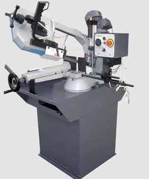
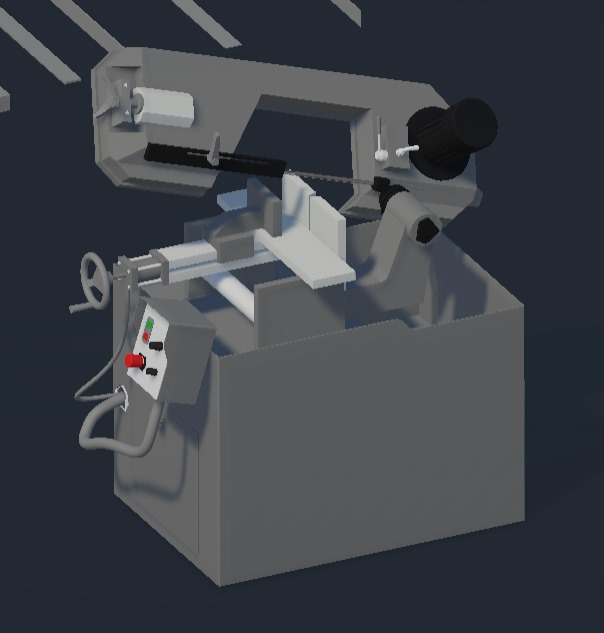

⚖️ Marco Teórico Técnico de la Máquina
La Sierra de Cinta Bandsaw S300DGW es una máquina de corte industrial especializada en materiales metálicos y estructurales. Opera mediante una hoja de sierra flexible que se desplaza sobre ruedas motrices, permitiendo cortes rectos y angulados. Interviene en procesos de manufactura para el ajuste de piezas a medida.
- Historia: Utilizada desde la Revolución Industrial para cortes de madera y metales.
- Tipos: Verticales, horizontales, automáticas.
- Componentes: Motor, hoja de sierra, ruedas, brazo giratorio, prensa, interfaz de control.
- Funcionamiento: Movimiento continuo de la sierra para cortes limpios.
- Ejes: X (brazo), Y (descenso), Z (material).
📸 Imágenes Comparativas


🎥 Práctica Interactiva y Video
Sigue el paso a paso y observa el video explicativo sobre cómo usar la máquina en el entorno virtual.
- Seleccionar material
- Activar prensa
- Elegir ángulo de corte
- Seleccionar velocidad
- Iniciar simulación
🚀 Simulación 3D en Unity
Haz clic en el botón para iniciar la simulación de la sierra de cinta desarrollada en Unity.
Ver Simulación 3D📄 Manuales y Documentación
Descarga los manuales técnicos y fichas de referencia desde el siguiente enlace:
Acceder a Manuales